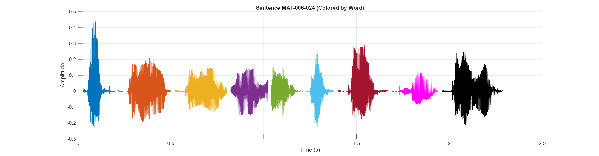

Sentence Audio:
Waveform:
| # | ID | Hanji | POJ |
|---|---|---|---|
| 1 | MAT-006-024-0002 | 及 | kap |
| 2 | MAT-006-024-0003 | 大 | tōa |
| 3 | MAT-006-024-0004 | 街 | koe |
| 4 | MAT-006-024-0005 | 面 | bīn |
| 5 | MAT-006-024-0006 | 的 | ê |
| 6 | MAT-006-024-0007 | 越 | oat |
| 7 | MAT-006-024-0008 | 角 | kak |
| 8 | MAT-006-024-0009 | 祈 | kî |
| 9 | MAT-006-024-0010 | 禱 | tó |